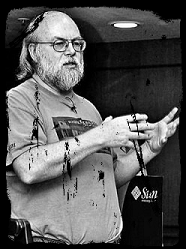

May 19, 1995
James Arthur Gosling was born on May 19th, 1955. He was born and grew up in Calgary, Canada.
May 29, 1977
In May of 1977, Gosling graduated from the University of Calgary with a degree in Computer Science.
May 18, 1983
He wrote a version of emacs that is known as gosling emacs.
Oct 16, 1984
Gosling started working for Sun Microsystems. Gosling created the Java language program under Sun Microsystems.
Feb 28, 1990
Gosling begins to design Java.
Jan 29, 1994
He designed and developed the Java program. This became the foundation of the web.
Apr 2, 2010
Sun Microsystems was bought out by Oracle. Gosling left Oracle shortly after they bought Sun Microsystems.
Mar 28, 2011
After leaving Oracle, Gosling was hired by Google.
Aug 21, 2011
After working with Google for 5 months, Gosling left for a start up company called Liquid Robotics. Liquid Robotics were making robots that explored the bottom of the ocean.

| Born | ▪ James Gosling ▪ May 19, 1955 (age 65) ▪ Calgary, Alberta, Canada |
|---|---|
| Study | ▪ University of Calgary ▪ Carnegie Mellon University |
| Married | ▪ Yes ( 2 children ) |
| Awards | ▪ Officer of the Order of Canada
IEEE John von Neumann Medal The Economist Innovation Award ▪ NAE Foreign Member |